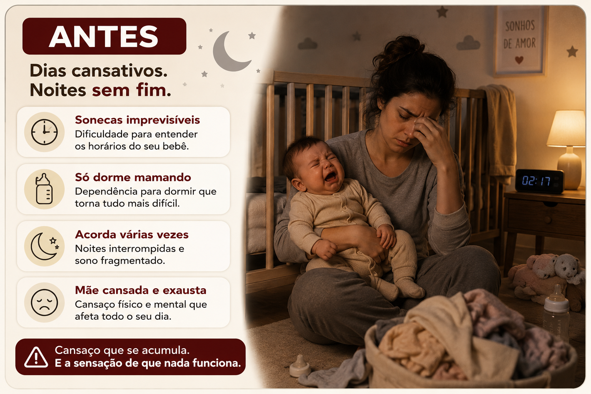
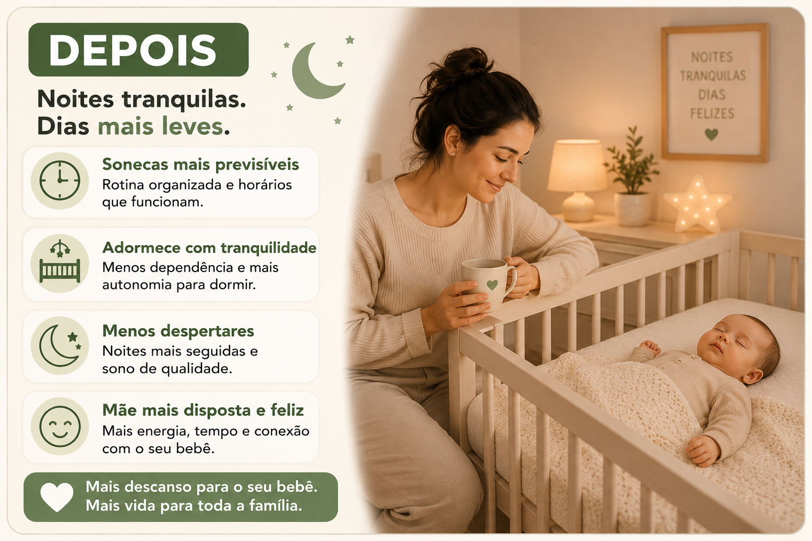
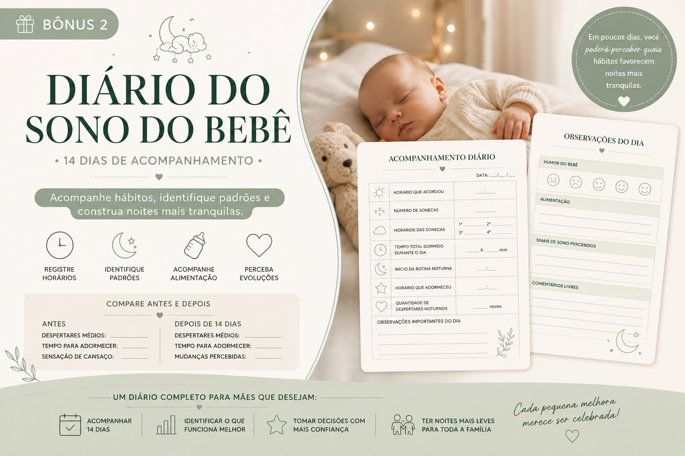

Você sente que acabou de deitar e seu bebê já acordou novamente
A noite fica picada, o corpo não recupera e você acorda já cansada.
Sono infantil gentil e prático
Descubra a rotina noturna utilizada por mais de 4.000 mães para reduzir despertares, organizar as sonecas e criar noites mais tranquilas para toda a família.
Você não está sozinha
O guia foi pensado para mães que já tentaram ajustar horários, colo, peito, ninar e sonecas, mas ainda se sentem perdidas.
A noite fica picada, o corpo não recupera e você acorda já cansada.
Você ama acolher, mas sente que virou o único caminho possível para ele adormecer.
Quando o descanso não encaixa, o bebê fica mais irritado e a rotina perde o controle.
Você quer ser mais presente, mas a privação de sono começa a pesar em tudo.

Método 3C do Sono Infantil™
Compreender • Construir • Conduzir
Um passo a passo criado para transformar noites cansativas em uma rotina mais tranquila e previsível.
Entenda as necessidades de sono de acordo com a idade do bebê. Saiba o que esperar de cada fase e ajuste a rotina com mais segurança.
Monte uma rotina previsível e adaptada à sua realidade. Crie uma sequência noturna possível de manter, mesmo em dias difíceis.
Aplique técnicas gentis para reduzir dependências sem sofrimento. Conduza o sono com acolhimento, constância e menos culpa.
A Transformação que Você Busca ⭐⭐⭐⭐⭐
O objetivo não é ter um bebê perfeito. É construir uma rotina mais previsível, acolhedora e tranquila para toda a família.


O que tem dentro
O conteúdo do Método 3C do Sono Infantil™ é organizado em uma sequência clara para você aplicar sem se perder em teoria.
Aprenda quanto sono seu bebê realmente precisa em cada etapa do desenvolvimento e evite erros comuns de tentativa e erro.
Descubra um passo a passo simples para criar uma sequência previsível que prepara o bebê e toda a família para uma noite mais tranquila.
Saiba como ajustar luz, ruídos, temperatura e estímulos para favorecer um sono mais profundo e restaurador.
Estratégias gentis para reduzir associações de sono e incentivar mais autonomia, sem pressão, culpa ou deixar o bebê chorando.
Bônus exclusivos
Modelos prontos para copiar, adaptar e criar noites mais previsíveis sem precisar montar tudo do zero.
Valor R$27
Acompanhe hábitos, identifique padrões e descubra quais pequenas mudanças trazem mais resultado.
Valor R$37Aprenda como reduzir a dependência de colo, peito ou contato constante sem deixar seu bebê chorando.
Valor R$47Mais confiança para começar
Seguindo as orientações na ordem certa, você cria um plano de sono mais humano, realista e sustentável para a sua família.
Preço especial por tempo limitado
🍔 Tudo isso por menos do que um combo de fast-food.
🔥 Você economiza R$171 hoje
Seu acesso é liberado imediatamente após a confirmação do pagamento. Você receberá tudo por e-mail em poucos minutos.
Garantir meu acessoCompra protegida
Leia o material. Aplique as orientações. E veja se faz sentido para a sua família. Se perceber que o conteúdo não atende às suas expectativas, basta solicitar o reembolso dentro de 7 dias.
Perguntas frequentes
Sim. O método foi criado para adaptar rotina, ambiente e condução de acordo com as necessidades do bebê.
Vale, especialmente se você precisa de um passo a passo mais organizado e gentil para aplicar com constância.
Sim. Após a confirmação da compra, o material é enviado para o e-mail cadastrado.
A compra é processada pela Zuckpay e conta com garantia incondicional de 7 dias.
Sim. O conteúdo ajuda você a entender sinais de sono, ambiente e rotina de forma respeitosa para cada fase, sem forçar independência antes do tempo.
Vale sim. O método também orienta ajustes de rotina, previsibilidade e transição gentil para bebês maiores.
Não. A proposta é conduzir o sono com acolhimento, constância e estratégias graduais, sem deixar o bebê chorando sozinho.
Algumas famílias percebem melhora em poucos dias, especialmente na previsibilidade da rotina. O resultado depende da idade do bebê, constância e realidade da família.
Sim. O acesso é digital e pode ser aberto pelo celular, tablet ou computador.
Sim. Você pode imprimir os materiais para acompanhar a rotina, preencher registros e consultar com mais facilidade.
Ainda não está pronta para levar tudo?
Você também pode adquirir apenas o Método 3C do Sono Infantil™ por R$19,90.
Quero apenas o método